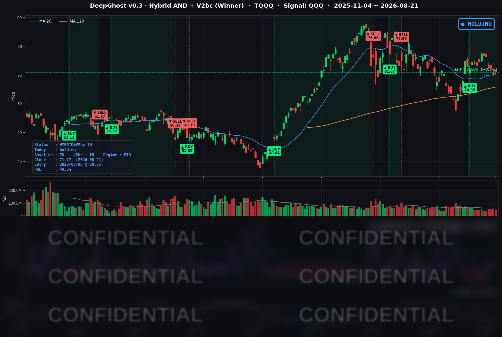

👻 매일 시그널과 히스토리를 홈페이지에서 한눈에 → www.ghostai.co.kr
지수는 전부 올랐지만 그 상승분은 대부분 장 시가였고, 장중 계속 흘러내렸습니다. 조정은 충분히 받았지만 투자 심리는 아직 얼어붙은 상태입니다. PMI결과가 장에 우호적이지 않았습니다.
📊 오늘의 매매 신호
| 항목 | 내용 |
|---|---|
| 오늘 할 일 | ✅ 아무것도 안 해도 됩니다 |
| 포지션 상태 | 📈 TQQQ 보유 중 (IN POSITION) |
| 매수 진입일 | 2026-08-06 (12거래일째) |
| 진입가 → 현재가 | $70.85 → $71.17 |
| 현재 포지션 수익 | +0.45% |
TQQQ 시그널 — IN POSITION
현재 상태: 매수 포지션 유지 중 | 이번 포지션 수익률 +0.45%

전략의 TQQQ 트랙은 8월 6일 진입 자리를 12거래일째 유지하고 있습니다. 오늘 새로 나온 매수·매도 신호는 없습니다. 어제 진입 후 처음으로 원금 아래(-0.52%)로 내려갔던 평가수익은 오늘 +0.45%로 되돌아왔습니다.
되돌리기는 했는데, 되돌린 방식이 개운하지 않습니다
오늘 미국 시장은 전 지수가 올랐습니다. 종가만 보면 어제의 하락을 상당 부분 만회한 하루입니다. 그런데 하루의 움직임을 개장 전 갭(전일 종가 → 시가)과 장중(시가 → 종가)으로 쪼개면 그림이 달라집니다.
| 구분 | 개장 전 갭 | 장중 | 일간 합계 |
|---|---|---|---|
| 다우 (DIA) | +0.48% | +0.41% | +0.89% |
| 러셀 2000 (IWM) | +0.73% | +0.04% | +0.77% |
| S&P 500 (SPY) | +0.45% | -0.04% | +0.41% |
| 나스닥100 (QQQ) | +0.60% | -0.25% | +0.35% |
| TQQQ | +1.73% | -0.74% | +0.98% |
장이 열린 뒤에도 매수세를 이어간 것은 다우뿐이었습니다. 나스닥100은 시가가 사실상 그날의 고점이었고, 이후 밀렸다가 겨우 되돌렸습니다. TQQQ는 개장 전에 받아둔 +1.73%를 장중에 0.74%포인트 반납했습니다. 즉 오늘의 회복은 밤사이 위험자산 선호가 살아난 결과이지, 나스닥에 매수세가 돌아온 결과가 아닙니다.
반도체가 특히 그랬습니다. 아침에는 크게 갭업해서 출발했지만 장중 내내 팔렸습니다. 마이크론이 시가 이후 -2.31%, 인텔 -2.91%, 엔비디아 -1.69%. 8월 26일 엔비디아 실적을 앞두고 미리 포지션을 줄이는 움직임으로 읽는 게 자연스럽습니다.
오늘 미국 시장 — 시황 요약
지수 마감
| 지수 | 종가 | 등락률 |
|---|---|---|
| S&P 500 | 7,674.37 | +0.43% |
| 나스닥 종합 | 26,180.46 | +0.43% |
| 다우존스 | 53,277.01 | +0.98% |
| 러셀 2000 | 3,017.87 | +0.85% |
| QQQ (나스닥100) | 713.44 | +0.35% |
어제와 순위가 정확히 뒤집혔습니다. 어제 낙폭 1·2위였던 다우와 러셀 2000이 오늘 상승 1·2위입니다. 반대로 어제 가장 잘 버텼던 나스닥100이 오늘은 주요 지수 중 꼴찌입니다.
저변은 확실히 개선됐습니다. S&P 500 편입 495종을 직접 집계하면 오른 종목 328개, 내린 종목 164개로 상승 비율 66.3%. 어제(31.1%)의 정확한 거울상입니다. 특정 대형주가 지수를 끌어올린 게 아니라 광범위한 종목이 실제로 올랐습니다. 그런데도 나스닥이 +0.43%에 그쳤다는 사실 자체가, 오늘 상승의 무게중심이 대형 기술주 바깥에 있었다는 증거입니다.
국채 금리 동향
| 만기 | 수익률 | 전일 대비 |
|---|---|---|
| 3개월 | 3.710% | +0.7bp |
| 5년 | 4.424% | +3.7bp |
| 10년 | 4.738% | +4.2bp |
| 30년 | 5.276% | +3.9bp |
금리는 이틀 연속 올랐고, 재무부 바이백이 만든 하락은 이제 완전히 사라졌습니다. 10년물은 바이백 발표 직전(8/18, 4.706%)보다도 높은 4.738%로 마감했습니다.
| 날짜 | 10년 | 30년 |
|---|---|---|
| 8/19 (수) | 4.653% | 5.194% ← 바이백 확대 발표 |
| 8/20 (목) | 4.696% | 5.237% |
| 8/21 (금) | 4.738% | 5.276% ← 되감김 완료 |
다만 어제와 오늘은 오른 이유가 다릅니다. 어제는 재정 불안(국가부채 40조 달러 돌파)이 밀어 올린 금리였고, 오늘은 경기가 너무 좋아서 오른 금리입니다. 이 차이가 주가 반응을 갈랐습니다. 어제는 같은 폭의 금리 상승에 전 지수가 무너졌는데, 오늘은 지수가 올랐습니다. 채권이 성장을 반영해서 오를 때 주식은 이를 견딥니다.
곡선 모양도 같은 이야기를 합니다. 3개월물은 +0.7bp로 사실상 고정된 채 중장기물만 4bp 안팎 올랐고, 장단기 스프레드(10년-3개월)는 +102.8bp로 8월 들어 가장 가팔라졌습니다. 침체 신호와는 정반대이고, 오늘 러셀 2000·은행·경기민감주가 오른 것과 정확히 같은 메시지입니다.
연준 발언 & 금리 패스
8월 21일 예정된 연준 인사의 공식 연설은 없었습니다. 오늘의 통화정책 재료는 연준 인사가 아니라 지표였습니다.
- 8월 19일 공개된 7월 FOMC 의사록의 매파 톤(9 대 3 동결, 반대표 3인은 즉시 0.25%p 인상 주장)은 어제 이미 값에 반영됐습니다.
- 오늘 PMI는 그 매파 서사를 꺾은 게 아니라 성장 쪽으로 옮겨 담았습니다. 단기 자금시장은 여전히 인하를 완전히 배제한 상태입니다.
- 다만 오늘 지표에서 판매물가 지수가 작년 11월 이후 최저로 내려온 점은 매파 진영의 근거를 일부 약화시킵니다. 성장은 강한데 기업이 최종 가격에 전가하는 압력은 줄고 있다는 뜻이기 때문입니다.
다음 시험대는 8월 28일(금) 워시 의장의 잭슨홀 첫 기조연설입니다. 취임 후 처음 내놓는 정책 프레임입니다.
오늘의 핵심 이슈
-
8월 플래시 PMI 서프라이즈. 오전 9시 45분 발표된 S&P 글로벌 8월 종합 PMI가 56.0으로 2022년 4월 이후 최고치를 찍었습니다. 서비스업 56.8(예상 54.0)이 큰 폭으로 상회했고, 제조업만 53.2로 5개월 최저였습니다. S&P 글로벌은 이 수치가 3분기 성장률 연율 3% 근처(2분기 1.5%)를 가리킨다고 했습니다. 여기에 판매물가가 작년 11월 이후 최저로 내려오면서, "성장은 뜨겁고 가격 전가 압력은 식는" 조합이 완성됐습니다. 자금이 경기민감·금융·소재·소비재로 쏟아진 이유입니다.
-
오늘 하락은 기술주가 아니라 유틸리티였습니다. S&P 500 하락 상위 20종 중 18종이 유틸리티였고, 유틸리티 30종 가운데 오른 종목이 하나도 없었습니다(중앙값 -2.32%). 그런데 이걸 "AI 전력 테마가 깨졌다"로 읽으면 틀립니다. AI·원전 노출주는 오히려 가장 덜 빠졌고(콘스텔레이션 -0.01%), 규제 기반의 순수 배당형 유틸리티가 가장 크게 밀렸습니다. 금리가 오르니 채권 대체재로 사둔 배당주를 정리하고 경기민감주로 옮겨간 것입니다.
-
어제의 월마트 공포는 하루 만에 되돌렸습니다. 어제 -9.15%로 무너진 월마트를 두고 시장은 "미국 소비자 전반의 체력 문제"로 읽었습니다. 그런데 오늘 타깃 +4.54%, 로스 +4.39%, 룰루레몬 +4.65%, 치폴레 +4.56%로 소매주가 일제히 올랐습니다(리테일 중앙값 +1.52%). 정작 월마트는 -0.13%로 반등하지 못했습니다. 어제의 하락은 소비 침체가 아니라 월마트 개별 문제였다는 쪽에 힘이 실립니다. 하루 만에 뉴스의 해석이 뒤집힌 사례입니다.
변동성 & 투자심리
- VIX (변동성 지수): 16.01 → 15.13 (-5.50%). 20일 평균(16.00)과 60일 평균(16.96)을 모두 밑돕니다. 종가가 당일 최저가 부근이라, 장 마감까지 긴장이 계속 풀렸다는 뜻입니다.
- 공포탐욕지수: 주식 45 (중립). 어제 탐욕에서 중립으로 내려온 뒤 회복하지 못했습니다. 참고로 크립토는 72(탐욕)로 훨씬 뜨겁습니다.
오늘은 공포가 풀린 하루이지, 탐욕이 돌아온 하루가 아닙니다. 지수가 오르고 종목의 3분의 2가 상승했는데도 투자심리 지표는 중립에 머물렀습니다. 그리고 그 안도의 수혜는 나스닥이 아니라 다우·러셀·소재·금융이 가져갔습니다.
매크로 & 원자재
- 유가: WTI $86.64, 브렌트 $93.87 — 하루로는 숨 고르기였지만 주간으로는 각각 +5.2% / +6.0%
- 금: GLD(금 ETF) 기준 +1.95%, 주간 +6.4%로 3개월 최고 수준
유가가 하루 쉰 것은 상방·하방 재료가 상쇄된 결과입니다. 베선트 재무장관이 이란에 대한 "사상 최강의 제재" 세부안을 월요일(8/24) 공개하겠다고 예고한 반면, 이란 대통령은 종전 의사를 내비쳤습니다. 다만 이번 주 누적 6%대 상승은 그대로 물가 기대에 얹혀 오늘 금리 상승의 배경이 됐습니다.
금은 재정 우려를 대비하려는 수요가 이어지며 강세입니다. 같은 흐름에서 비트코인도 주간 20%대 급등했고, 이것이 오늘 미국 증시의 개장 전 갭업을 만든 배경으로 보입니다.
주요 종목 동향
| 종목 | 종가 | 등락률 | 비고 |
|---|---|---|---|
| TSLA | 362.86 | +5.14% | 네바다 로보택시 상용 허가(만장일치). 라스베이거스에 사이버캡 최대 5,000대 |
| GOOGL | 344.82 | +1.22% | 갭·장중 모두 상승. 메가캡 중 가장 견조 |
| AVGO | 368.45 | +1.21% | 갭업분을 장중 반납. 5일 -6.2% |
| META | 549.90 | +0.75% | 5일 -6.8%, 20일 -7.6%로 커버리지 최약 |
| MSFT | 483.24 | +0.43% | 유일하게 갭다운 후 장중 상승. 소프트웨어 강세와 일치 |
| QCOM | 160.75 | +0.01% | 갭업 전량 반납, 보합 |
| AMZN | 258.63 | -0.57% | 갭업 출발 후 장중 하락 |
| AAPL | 309.35 | -0.63% | 20일 -7.1%로 부진 지속 |
| NFLX | 79.59 | -0.69% | 특이 재료 없음 |
| MU | 966.78 | -0.77% | 어제 100억 달러 연구소 발표 랠리(+3.97%) 되돌림 |
| NVDA | 214.72 | -0.98% | 8월 26일 실적 대기. 5일 -4.6%로 포지션 축소 진행 |
| INTC | 90.07 | -2.24% | 커버리지 최대 하락. 5일 -12.1%로 압도적 최약체 |
커버리지 12종 중 상승 5 / 하락 7로, 시장 전체(66.3% 상승)보다 훨씬 나빴습니다. 테슬라를 빼면 사실상 상승 동력이 없었고, 반도체 4종은 전부 갭업 후 장중에 매도당했습니다. 오늘 시장의 상승은 우리 커버리지 바깥에서 일어났습니다.
한편 소프트웨어와 반도체의 갈림은 다시 살아났습니다. 소프트웨어 그룹 중앙값 +1.34%(오라클 +3.10%, 팔로알토 +2.38%) 대 반도체 -0.38%. 제조업 PMI가 5개월 최저로 예상을 밑돈 것이 하드웨어 쪽에 부담이 됐을 가능성이 있습니다.
다음 주 일정
- 8/24 (월) — 이란 제재 세부안 공개 예정. 주초 유가 방향이 다시 열립니다.
- 8/26 (수) — 이번 국면의 최대 변곡점. 아침에 연준이 가장 중요하게 보는 물가 지표인 7월 근원 PCE(컨센서스 전년비 3.3% 유지), 저녁에 엔비디아 실적(회사 가이던스 매출 약 910억 달러 ±2%). 매크로와 AI 사이클이 하루에 함께 판정받습니다.
- 8/28 (금) — 워시 의장의 잭슨홀 첫 기조연설. 취임 후 최초의 정책 프레임 제시입니다.
Ghost.AI — Quantitative AI Investment
Model: DeepGhost v0.3 | Transformer-Based Deep Learning
Coverage: 13 tickers | Updated every trading day after US market close
⚠️ 본 자료는 정보 제공 목적으로만 작성되었으며 투자 권유가 아닙니다. 모든 투자의 책임은 투자자 본인에게 있습니다. 과거 성과가 미래 수익을 보장하지 않습니다.
[유의사항]
- 본 서비스는 불특정 다수를 대상으로 발행되는 단방향 정보 제공 서비스이며, 투자자 개인의 재산 상황·투자 목적·위험 선호도를 반영한 개별 투자 조언이 아닙니다.
- 고스트에이아이 주식회사는 고객과 쌍방향 의사소통(개별 상담, 맞춤형 자문 등)을 제공하지 않습니다.
- 본 콘텐츠는 투자 권유 또는 매매 주문의 청약·청약의 권유에 해당하지 않으며, 최종 투자 판단 및 그에 따른 손익의 책임은 전적으로 투자자 본인에게 있습니다.
고스트에이아이 주식회사